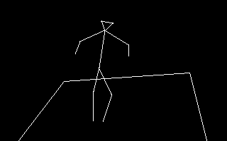
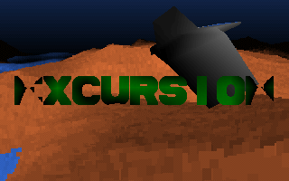
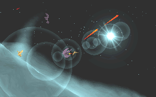

Mid-1990s DOS 64k intros, reverse engineered and rebuilt in C, then compiled to WebAssembly. Each one depacks the original executable in memory and runs from it. Click a picture to run it - picture and sound start together, because a browser will not play audio until you ask it to.

Coma · Assembly 1995 · UKKO.EXE, 52,836 bytes
A rotoscoped stick figure dances through four wireframe rooms, drawn entirely in lines - 705 captured poses, tweened.

Vista · Abduction 1996 · XCURSION.EXE, 49,761 bytes
A voxel landscape, a rotozoomer, a tunnel and a planet, flown past in one continuous shot.

Vista · Juhla 1997 · LITHIUM.EXE, 63,281 bytes
Ships duel over a terrain, a tower shatters and reassembles, and a tunnel turns - every cut landing on the music.